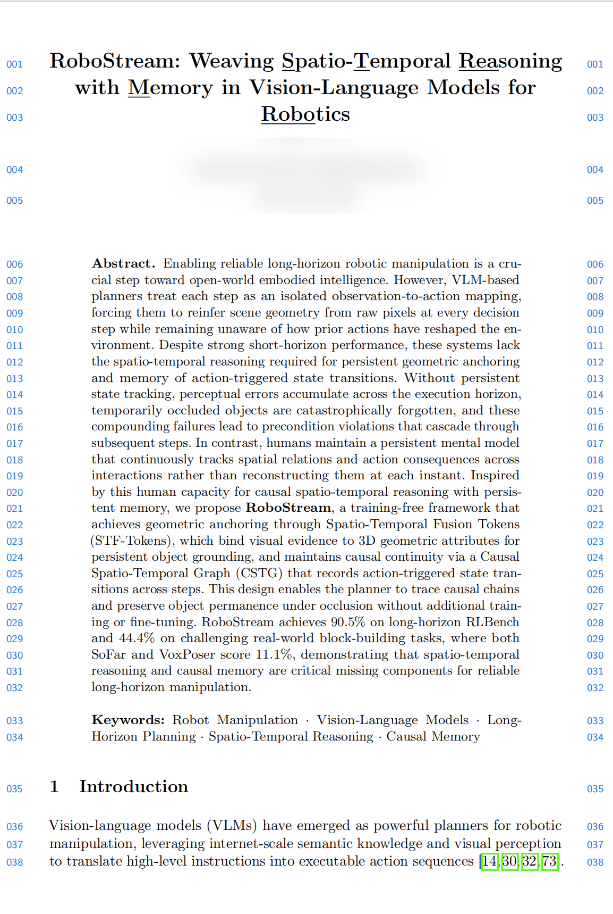
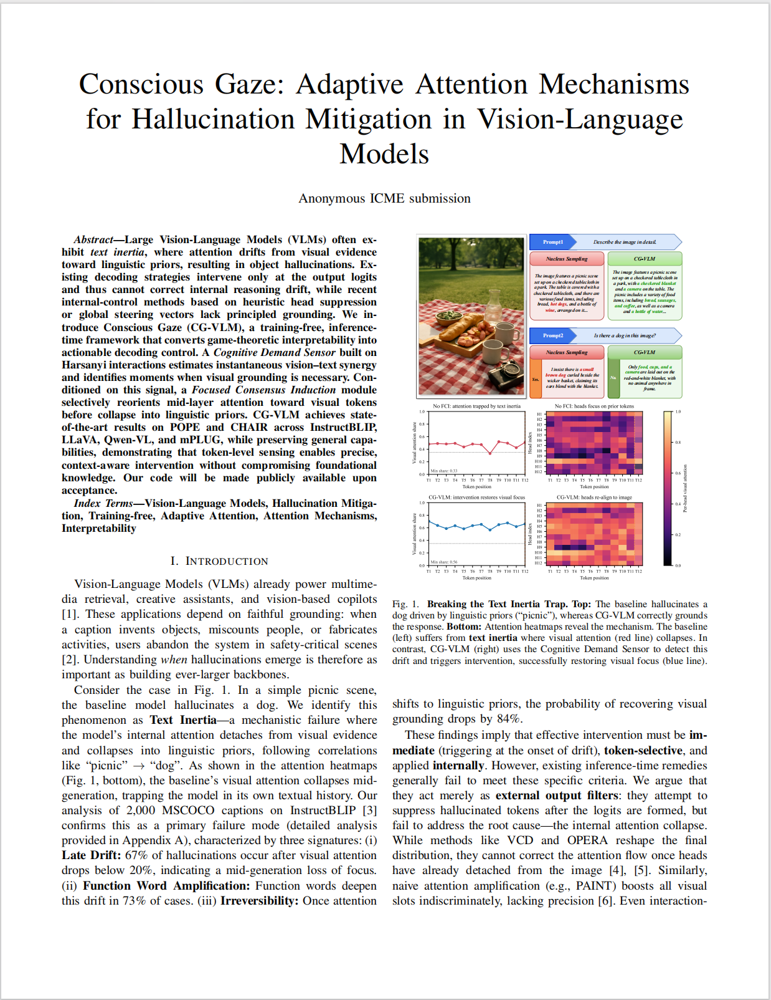
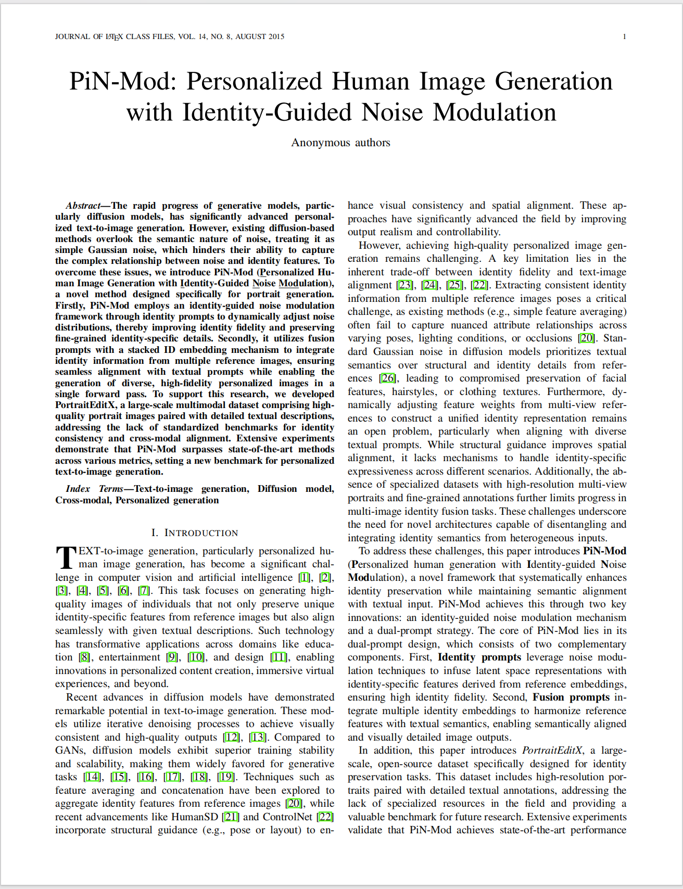

卜炜珏 (Bu Weijue)
Undergraduate Student @ CUMT


Biography
Hi! I am Weijue Bu (Chinese name: 卜炜珏), currently an undergraduate student (2023 - Present) at China University of Mining and Technology. I rank 8/188 (Top 4%) in my major.
My research interests include Embodied AI, Spatio-temporal Reasoning, and Vision-Language Models (VLMs). I am actively looking for research opportunities and collaborations.
News
- 2025.12 Paper RoboStream submitted to ECCV 2026.
- 2025.11 Paper Conscious Gaze submitted to ICME 2026.
- 2025.10 Won National First Prize in the "Challenge Cup" Competition.
- 2025.07 Awarded Academic Potential 1st Prize at SJTU Summer School.
- 2024.06 Paper PiN-Mod submitted to IEEE TETCI.
Selected Publications & Projects

RoboStream: Spatio-temporal Reasoning & Memory Framework for Robotic Manipulation
Under Review at ECCV 2026
Abstract: We propose RoboStream, a training-free framework for long-horizon robotic manipulation that integrates spatio-temporal reasoning with persistent memory. By fusing visual evidence with 3D geometry (STF-Tokens) and maintaining a Causal Spatio-Temporal Graph (CSTG), RoboStream enables persistent object grounding and occlusion recovery. Experiments show it achieves 90.5% success on RLBench and significantly outperforms baselines in challenging real-world tasks.

Conscious Gaze: Training-free VLM Hallucination Suppression
Under Review at ICME 2026
Abstract: Large Vision-Language Models often suffer from text inertia, where attention drifts from visual evidence to linguistic priors. We introduce Conscious Gaze (CG-VLM), a training-free framework that uses a Cognitive Demand Sensor to detect vision-text conflicts and Focused Consensus Induction to reorient attention. CG-VLM achieves state-of-the-art results on POPE and CHAIR benchmarks, effectively suppressing hallucinations without compromising general capabilities.

PiN-Mod: Identity-Consistent Personalized Image Generation
Under Review at IEEE TETCI (SCI Q2)
Abstract: We introduce PiN-Mod, a novel framework for personalized text-to-image generation that balances identity fidelity and semantic alignment. It employs identity-guided noise modulation and a dual-prompting strategy to preserve fine-grained facial details while ensuring seamless text alignment. We also release PortraitEditX, a large-scale multimodal dataset to benchmark identity consistency and cross-modal control.
Large Model + Knowledge Graph Adaptive Learning System
Challenge Cup National First Prize Project
Designed and implemented the core ORCDF cognitive diagnosis framework. Contributed to the full-stack development (FastAPI + React). Improved diagnosis accuracy by over 20%. The project won the National First Prize in the "Challenge Cup" Competition.
Honors & Awards
- National First Prize, "Challenge Cup" Unveiling Competition (2025.10)
- Academic Potential 1st Prize, SJTU Natural Sciences Institute Summer School (2025.07)
- Bronze Medal, ICPC Invitational (2025.03)
- First Prize (Provincial), Jiangsu Higher Mathematics Competition (2024.06)
- Third Prize (National), GPLT (Group Programming Ladder Tournament) (2024.04)
- Second Prize (Provincial), Lanqiao Cup C/C++ Programming (2024.04)